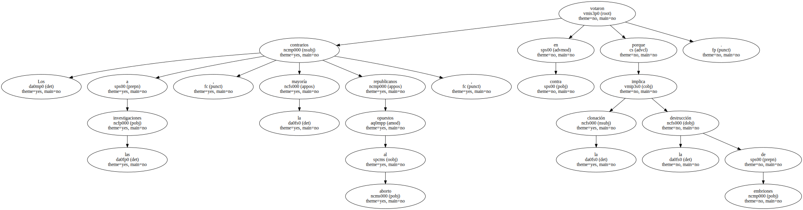
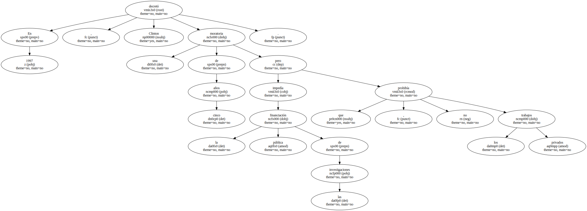

La Cámara de Representantes norteamericana decidió ayer prohibir todas las investigaciones que supongan la fabricación y la clonación de embriones humanos incluso en el caso de experimentos no reproductivos , es decir , puramente científicos , destinados a la creación de tejidos.
La enmienda , que fue rechazada en la Cámara de Representantes por 265 votos contra 162 , pone en jaque numerosas y prometedoras investigaciones médicas , algunas de las cuales ya están en curso.

La última palabra la tiene ahora el Senado.
El resultado de la votación representa una victoria para el presidente George Bush , que había pedido públicamente la prohibición , y un duro revés para la mayoría de los científicos , que defendían las investigaciones controladas como herramienta para la fabricación de células madre , una herramienta terapéutica de posibilidades infinitas.
Ambos rivales estaban de acuerdo en prohibir la clonación humana , la fabricación de seres genéticamente idénticos , pero diferían acerca de la clonación terapéutica.
Quien infrinja la ley , dice el texto norteamericano , podrá ser condenado a 10 años de prisión y a una multa de al menos un millón de dólares , cerca de 200 millones de pesetas.
Los contrarios a las investigaciones , la mayoría republicanos opuestos al aborto , votaron en contra porque la clonación implica la destrucción de embriones.
" Si los científicos tuvieran la autorización para clonar embriones , éstos podrían ser vendidos y comercializados en masa - - había advertido el republicano Jame Sensenbrenner , que preside la Comisión Judicial de la Cámara - - . Es una cuestión ética ".
" Esta Cámara - - añadió su compañero J. C. Watts - - no debe dar el visto bueno a científicos locos que quieren jugar con el don de la vida ".
En 1997 , Clinton decretó una moratoria de cinco años que impedía la financiación pública de las investigaciones , pero no prohibía los trabajos privados.
La batalla actual no ha concluido porque aún debe pronunciarse el Senado , controlado por los demócratas.